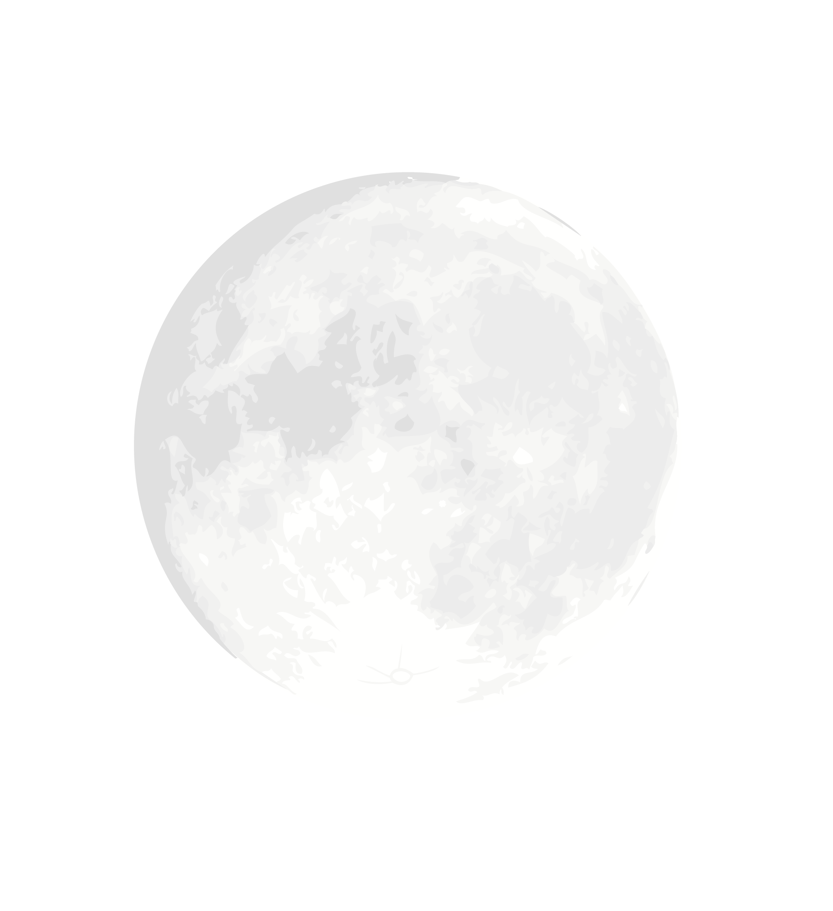
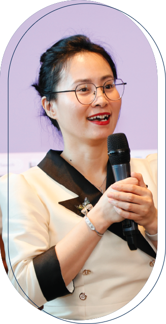

"Khai vấn là cộng tác với khách hàng trong một quá trình khơi gợi suy nghĩ và sáng tạo, từ đó giúp họ có động
lực phát huy tối đa tiềm năng cá nhân và sự nghiệp” - Định nghĩa của Liên đoàn Khai vấn quốc tế (ICF)."
Khai vấn là một kỹ năng được ứng dụng rộng rãi trong mọi mặt của đời sống. Bạn có một công việc quan trọng cần
hoàn thành? Khai vấn hiệu suất (performance coaching) có thể giúp bạn làm việc đó. Nếu bạn cần cải thiện một
lĩnh vực nào đó trong cuộc sống của mình, tùy vào lĩnh vực đó là gì bạn có thể tìm đến relationship coaching,
financial well-being coach, career coach hay executive coaching…. Hoặc bạn muốn phát huy tối đa tiềm năng của
mình, muốn mình sống đời sống sáng tạo, tự chủ mỗi ngày và truyền cảm hứng để người khác làm việc đó, bạn có
thể tìm đến Khai vấn kiến tạo (Generative Coaching)
Có thể bạn đã tìm hiểu và vẫn thấy bối rối? Bạn muốn học Khai vấn để ứng dụng trong công việc và cuộc sống?
Hay bạn mong muốn trở thành một người làm nghề Khai vấn chuyên nghiệp? Hành trình của bạn có thể bắt đầu từ
đây cùng inCoach. Tại inCoach, chúng tôi tin rằng có bao nhiêu người làm nghề Khai vấn thì có bấy nhiêu cách
làm nghề. Chúng tôi tin rằng BẠN chính là điều độc đáo nhất, là công cụ mạnh mẽ nhất và do đó các chương trình
đào tạo của inCoach đều xoay quanh cách tiếp cận này: Phát triển người học thành bí quyết mạnh mẽ nhất khi làm
nghề.

Câu chuyện cá nhân
Chị Nguyễn Minh Phương
Tổng
Giám đốc Công ty Cổ phần Đào tạo và Tư vấn Penn Academy
“Khi em bắt đầu chạm đến những kiến thức đầu tiên của Khai vấn, em nhận thấy đây là một nghề rất nhân
văn, vì mình, vì những người xung quanh mình và sẽ có khả năng rất lớn là giúp cho các mối quan hệ tốt hơn,
mình và những người xung quanh mình hạnh phúc hơn. Và cuộc sống sẽ trở nên tràn đầy hơn”
Anh Nguyễn Ngọc
Toản
TGĐ công ty Cổ
phần truyền thông Việt Hải
“ Học Khai vấn giúp ích cho công việc của mình và giúp ích cho chính mình. Qua một khóa học mình thấy bản
thân mình thay đổi, công việc và mọi thứ trong cuộc sống cũng đều thay đổi. Cảm ơn inCoach và các bạn đồng
nghiệp đã cho mình và công ty mình một trải nghiệm tuyệt vời”
Anh Trần
Quang Tuấn
Trưởng
phòng Đào tạo và phát triển Tập đoàn giáo dục Equest
“ Những kỹ năng trong Khai vấn đã giúp mình mở rộng được mạng lưới, thăng tiến trong công việc, kết nối
nhiều hơn với gia đình, đồng nghiệp và cả những người mà trước đây chưa bao giờ mình nghĩ có thể giao tiếp
được với họ”
Chị Hồng Anh
Business Owner/Freelancer/Life Coach
"Khai vấn đã thay đổi cuộc sống và tư duy của em, thay đổi cách em tư duy về mọi vấn đề. Khai vấn luôn là
một điều có ý nghĩa với em, nó giúp cho những mối quan hệ xung quanh em trở nên tốt đẹp hơn. Không những
vậy, sau khi học Khai vấn, kỹ năng lắng nghe của em cũng cải thiện hơn rất nhiều”
Chị Phạm Hà Trang
Quản lý cấp cao Phát triển
Năng lực đội ngũ Quản lý Kinh doanh
“ Khi ứng dụng Khai vấn trong Tổ chức, mình nhận thấy được sự chuyển hóa trong chính những người lãnh đạo.
Khai vấn giúp mối quan hệ giữa các cá nhân trong tổ chức trở nên tốt đẹp và tích cực hơn”
Lợi ích của Khai vấn
Lợi ích cho tổ chức
1. Trao quyền: Khai vấn giúp mỗi cá nhân được ghi nhận, hỗ trợ và trao quyền trong một không gian
an toàn để họ dám thử nghiệm, học hỏi và vượt qua những thách thức.
2. Tăng gắn kết: Khi mỗi cá nhân được ghi nhận về những giá trị và tài năng cá nhân mà họ đóng góp
cho tổ chức, nhiều khả năng là họ sẽ gắn kết và hài lòng hơn với công việc
3. Tăng hiệu suất làm việc: Khai vấn giúp người lãnh đạo có thêm cách thức làm việc với nhân viên
mà chú trọng đến những điểm mạnh và cơ hội phát triển, từ đó cải thiện hiệu suất làm việc của cá nhân và
đội nhóm ...
4. Đào sâu học hỏi: Khai vấn giúp soi chiếu từ các trải nghiệm, kết nối kỹ năng với mục tiêu và
các tình huống thực tế. Việc học hỏi được đào sâu từ các trải nghiệm thật và ứng dụng ngay vào trong đời
sống hay công việc
5. Thúc đẩy sáng tạo tập thể: Khi mỗi thành viên có động lực, có sự gắn kết, có môi trường học
hỏi, họ sẽ tương tác theo cách thức khơi gợi sự tò mò, tính sáng tạo với mong muốn thể hiện bản thân tốt
nhất trong sự cộng tác và nâng đỡ của người lãnh đạo và đội nhóm
Lợi ích cho cá nhân
1. Hiểu hơn về bản thân: Hiểu về bản thân là yếu tố nền tảng cho bất kỳ sự phát triển cá nhân và sự
nghiệp nào. Thông qua quá trình làm việc đầy tính soi chiếu, khơi gợi suy nghĩ và sáng tạo với nhà khai
vấn, mỗi cá nhân có được những tri kiến sâu sắc về bản thân, về những điều họ muốn và những điểm họ có thể
phát triển trong tương lai.
2. Sự tự tin: Đến từ việc học hỏi từ trải nghiệm thật, cùng với người bạn tin tưởng. Đây cũng chính
là những trụ cột trong quan hệ khai vấn. Việc tạo ra những chiến lược để đạt được mục tiêu và ghi nhận
những thành công với chuyên gia Khai vấn cũng là một cách để gây dựng sự tự tin bên trong mình.
3. Sự cộng tác: mỗi cá nhân có sự hiểu rõ về chính mình và cam kết với sự phát triển bản thân,
hiểu được những động lực hành động và cam kết thì sự cộng tác và mong muốn học hỏi từ người khác sẽ cao
hơn. Họ có cách thức để giải quyết các xung đột và đẩy nhanh quá trình ra quyết định, cũng như quản lý
thời gian tốt hơn, đóng góp hiệu quả hơn và công việc chung.
4. Sự kiên cường bền bỉ (Resilience): khi có được sự hiểu sâu sắc về bản thân và lựa chọn mà họ
có thể có, mỗi cá nhân có sức mạnh tinh thần và thể chất dẻo dai hơn, từ đó họ thích ứng được với những
biến động của đời sống và cải thiện hiệu quả, sự hài lòng với công việc và cuộc sống nói chung. Khi nhà
lãnh đạo có được sự kiên cường bền bỉ, họ sẽ truyền cảm hứng và động lực cho đội ngũ của mình để đạt
được những mục tiêu chung
5. Giao tiếp hiệu quả:
Mọi hình thức Khai vấn đều giúp cải thiện hiệu quả giao tiếp, từ đó tác động tích cực đến mọi mọi khía
cạnh của cuộc sống. Điều này đến từ những trụ cột của khai vấn như: tư duy rành mạch, niềm tin ở con
người, kỹ thuật lắng nghe và đặt câu hỏi hiệu quả. Trở thành chuyên gia khai vấn cũng có nghĩa là bạn
trở thành một người giao tiếp thấu hiểu và sâu sắc.
6. Cân bằng cuộc sống:
Khai vấn giúp xác định những điều quan trọng trong cuộc sống của mỗi người, từ đó các ưu tiên trong cuộc
sống và công việc trở nên rõ ràng hơn, sự lựa chọn cũng nhẹ nhàng hơn. Nhờ có sự cân bằng giữa cuộc sống
và công việc, người làm nghề khai vấn thường cảm thấy hài lòng hơn về những điều mình đã và đang làm
được, họ sẽ cảm thấy cuộc sống trở nên có ý nghĩa hơn khi cải thiện được khả năng chăm sóc bản thân và
có sự liên kết với chính mục tiêu mà mình đã đặt ra.
7. Cải thiện sức khỏe tinh thần:
Trong vòng 3 tháng đầu sau khi học Khai vấn, 38% người học thấy được sự phấn chấn từ bên trong. Trong số
rất nhiều khía cạnh về vấn đề sức khỏe tinh thần thì sự hài lòng về cuộc sống, mục tiêu và nhu cầu kết
nối với xã hội cũng được cải thiện. Những điều này song hành cùng với việc điều chỉnh cảm xúc thực sự đã
giúp cải thiện tinh thần một cách xác đáng cho những người học Khai vấn

Bắt đầu từ đâu?
Mỗi cá nhân và tổ chức đều có tiềm năng phát triển để tối đa hóa tiềm năng, và Khai vấn là công cụ hữu hiệu để mỗi cá nhân khám phá sự trọn vẹn từ bên trong họ. Khai vấn phù hợp với bạn nếu:
• Bạn yêu thích những công việc về phát triển con người
• Bạn thích giúp đỡ người khác
• Bạn muốn ứng dụng vào cuộc sống nói chung
• Bạn là một người lãnh đạo, quản lý luôn mong muốn xây dựng phong cách lãnh đạo lôi cuốn, thấu hiểu và phát triển văn hóa tổ chức lấy con người làm trọng tâm.
• Bạn muốn dùng Khai vấn để hỗ trợ công việc hiện tại: Tư vấn, đào tạo, bán hàng…
• Bạn muốn hiểu chính mình hơn và muốn có một cách thức tương tác hiệu quả hơn với gia đình, bạn bè, đồng nghiệp…
inCoach đưa ra hệ thống đào tạo liên thông để bạn có thể bắt đầu theo cách phù hợp với nhu cầu của mình và vẫn tích lũy được số giờ đào tạo để trở thành chuyên gia Khai vấn chuyên nghiệp theo tiêu chuẩn quốc tế.